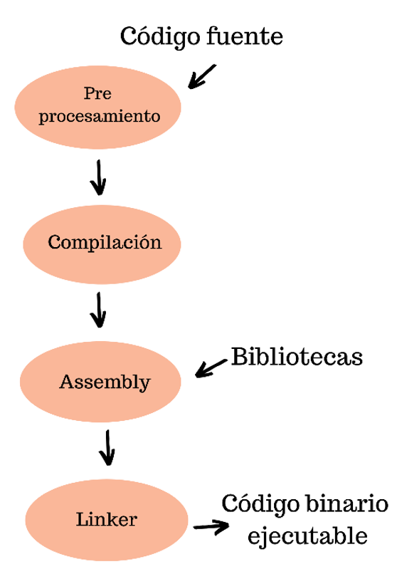
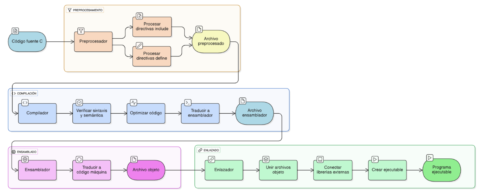

3. El Proceso de Compilación y el Ciclo de Vida del Código
Has escrito tu algoritmo en papel. ¿Cómo conviertes ese plan lógico en algo que la computadora pueda ejecutar? Aquí es donde entra en juego el compilador.
El lenguaje C pertenece a la familia de los lenguajes compilados, lo cual es fundamental para su rendimiento. Para entender qué significa esto, debemos distinguirlo de su contraparte: el lenguaje interpretado.
1. Compiladores vs. Intérpretes: La Distinción Fundamental
Cuando escribes un programa, la CPU de tu computadora no puede entender directamente las palabras if, while o printf. La CPU solo entiende código máquina (secuencias de unos y ceros). El proceso de traducción de tu código humano a código máquina puede hacerse de dos maneras:
A. Lenguajes Compilados (Ej: C, C++)
Un lenguaje compilado utiliza un programa llamado Compilador.
Proceso: El compilador toma todo tu código fuente y lo traduce una sola vez a un archivo de código máquina ejecutable (como un .exe en Windows). Esta traducción se hace antes de que el programa se ejecute.
Ejecución: Una vez compilado, el programa resultante es código nativo de la máquina. Se ejecuta directamente sobre el hardware, sin necesidad de un traductor intermediario.
B. Lenguajes Interpretados (Ej: Python, JavaScript)
Un lenguaje interpretado utiliza un programa llamado Intérprete.
Proceso: El intérprete lee tu código fuente línea por línea y traduce cada línea a código máquina mientras el programa se está ejecutando.
Ejecución: El intérprete actúa como un traductor simultáneo en tiempo real. Cada vez que ejecutas el programa, el intérprete debe volver a traducir cada línea.
La Ventaja Clave del Código Compilado: La Velocidad 🚀
La principal ventaja del modelo de compilación de C es la velocidad de ejecución.
Dado que el programa C ya ha sido completamente traducido a código máquina antes de que el usuario lo ejecute, la CPU solo tiene que seguir esas instrucciones optimizadas. Un programa interpretado, en cambio, debe pagar el "costo" de la traducción en tiempo real cada vez que se ejecuta, haciéndolo inherentemente más lento.
Analogía:
Compilador (C): Es como traducir un libro completo del inglés al español (una vez) y luego entregar el libro traducido para que cualquiera lo lea a su propio ritmo.
Intérprete (Python): Es como tener un traductor al lado, leyendo el libro en inglés y traduciéndolo en voz alta, oración por oración, cada vez que alguien quiere leerlo.
2. El Código Fuente y el Entorno de Desarrollo
Antes de que ocurra la magia de la compilación, todo comienza con el texto que tú, como programador, escribes.
El Código Fuente (Archivo .c)
El Código Fuente es el archivo de texto plano que contiene el conjunto de instrucciones lógicas y precisas que definen tu programa, escritas según la sintaxis del lenguaje.
En el caso de nuestro curso:
Definición: El código fuente es el texto que has escrito en Lenguaje C.
Extensión: Típicamente, los archivos de código fuente de C terminan con la extensión .c (por ejemplo, mi_primer_programa.c). Este archivo es la Entrada para todo el proceso de compilación.
El código fuente es totalmente legible para los humanos, pero la computadora no lo puede ejecutar directamente.
El Entorno de Desarrollo
Para escribir y gestionar el código fuente, necesitamos un Entorno de Desarrollo. Este entorno proporciona las herramientas necesarias para que el programador pueda crear, compilar y probar sus programas eficamente.
Hay dos configuraciones comunes:
Editor de Texto + Compilador Manual: Consiste en usar un simple editor de texto (como Visual Studio Code, Sublime Text o Vim) para escribir el archivo .c. Luego, invocas el Compilador directamente desde la línea de comandos. Los compiladores más utilizados para C son GCC (GNU Compiler Collection) o Clang.
IDE (Entorno de Desarrollo Integrado): Un IDE (como Code::Blocks o Visual Studio) es un software que agrupa todas las herramientas necesarias en una sola interfaz. Incluye el editor de código, el compilador, un depurador (debugger) y herramientas de gestión de proyectos. El IDE simplifica el proceso al automatizar las complejas fases de compilación y enlazado.
3. Las Cuatro Fases de la Compilación (El Ciclo de Vida)
El proceso de transformar tu archivo de código fuente (.c) en un programa ejecutable pasa por cuatro fases secuenciales y bien definidas. Este es el ciclo de vida que sigue cada programa C:
| FASE | HERRAMIENTA | ENTRADA | SALIDA |
|---|---|---|---|
| I. Preprocesamiento | Preprocesador | Código Fuente (.c) | Código Preprocesado (.i) |
| II. Compilación | Compilador | Código Preprocesado (.i) | Código Ensamblador (.s) |
| III. Ensamblado | Ensamblador | Código Ensamblador (.s) | Código Objeto (.o o .obj) |
| IV. Enlazado (Linking) | Enlazador (Linker) | Código Objeto (.o) + Librerías | Programa Ejecutable (.exe o binario) |

Este proceso garantiza que el código sea revisado, optimizado y se le añadan todas las piezas externas que necesita antes de ser un programa funcional.
El Ciclo de Vida del Código C: De Texto a Ejecutable
El proceso de compilación es la orquesta que transforma tu plan lógico (el código fuente) en un lenguaje que el hardware puede entender y ejecutar. Es un proceso secuencial y metódico, dividido en cuatro fases principales, cada una con un propósito específico y una herramienta dedicada.
Fase I: El Preprocesamiento (La Preparación)
El Preprocesador es el primer programa en actuar. Su función es preparar y expandir el código fuente original antes de que el verdadero compilador lo vea. Es, esencialmente, un editor de texto inteligente que opera bajo tus órdenes explícitas.
¿Qué hace? Maneja las directivas que comienzan con el símbolo de almohadilla (#).
#include: Su rol más importante. Localiza el archivo de cabecera (como stdio.h) y literalmente copia y pega todo su contenido en tu archivo. ¡Es una operación de copy-paste masiva!
#define: Realiza sustituciones de texto simples (macros). Si defines #define PI 3.14159, el preprocesador reemplaza cada aparición de PI con 3.14159.
Resultado: El archivo preprocesado (.i). Es un archivo de texto expandido que no contiene directivas #include o #define, sino el código que resulta de sus acciones.
Fase II: La Compilación (La Traducción Lógica)
El Compilador toma el archivo preprocesado (.i) y realiza la traducción de alto nivel a bajo nivel. Esta es la fase donde se pone a prueba tu conocimiento de la sintaxis C.
¿Qué hace?
Revisión Gramatical: Verifica que el código cumpla con las reglas sintácticas y semánticas del estándar C (ANSI C). Si olvidas un punto y coma (;), ¡aquí es donde el compilador te grita un Error de Compilación!
Optimización: Intenta reorganizar el código para que se ejecute de la manera más rápida y eficiente posible.
Traducción: Traduce el código C a código ensamblador (Assembly), un conjunto de instrucciones de muy bajo nivel (como MOVE, ADD, JUMP) que son específicas de la arquitectura de la CPU (Intel, ARM, etc.).
Resultado: El archivo Ensamblador (.s). Un archivo de texto que contiene instrucciones de Assembly.
Fase III: El Ensamblado (El Lenguaje de la Máquina)
El Ensamblador es un traductor directo que convierte las instrucciones legibles del Ensamblador (.s) en el código nativo que la máquina entiende: el código binario (unos y ceros).
¿Qué hace? Convierte cada instrucción de Ensamblador en su equivalente binario.
Resultado: El archivo Objeto (.o en Linux/macOS, o .obj en Windows). Este archivo es puro código de máquina que la CPU puede ejecutar, pero todavía es una pieza incompleta del rompecabezas. ¿Por qué incompleta? Porque aún no está conectada a las librerías externas que necesita.
Fase IV: El Enlazado (Linking) (El Ensamblaje Final)
El Enlazador (Linker) es el último paso y actúa como el pegamento final del programa. Su trabajo es combinar todas las piezas de código necesarias.
¿Qué hace?
Unión de Piezas: Combina todos los archivos objeto (.o) que forman parte de tu proyecto (si tu programa usa múltiples archivos C).
Conexión de Librerías: Lo más crucial: añade las piezas de código que se encuentran en las librerías externas. Por ejemplo, la función printf() que usas para imprimir en pantalla no está incluida en tu archivo .c; el Enlazador la busca en la librería estándar de C (como la librería stdio) y conecta su código binario a tu programa.
Creación del Ejecutable: Si todas las referencias de código se resuelven, el Enlazador crea el archivo final.
Resultado: El Programa Ejecutable (Ej. un archivo .exe en Windows o un binario sin extensión en Linux/macOS). ¡Este archivo ya es autónomo y puede ser ejecutado directamente por la computadora!

4. Errores Comunes en el Ciclo
Aprender a programar es aprender a cometer errores, pero es fundamental saber dónde y cuándo ocurren. Durante el ciclo de vida del código C, los errores se dividen en dos categorías principales, dependiendo de la fase en que se detectan:
A. Errores de Compilación/Enlazado (Errores de Traducción)
Estos errores ocurren en las primeras tres fases del ciclo (Preprocesamiento, Compilación y Ensamblado) o en la fase final del Enlazado. Estos errores impiden que se genere el archivo ejecutable (.exe). El compilador (o el enlazador) te avisará con un mensaje de error y el proceso se detendrá.
| Tipo de Error | ¿Dónde Ocurre? | Causa Común | Ejemplo de Fallo |
|---|---|---|---|
| Sintaxis | Compilación | Violación de las reglas del lenguaje. | Olvidar un punto y coma (;) al final de una sentencia o usar paréntesis () donde deberían ir llaves {}. |
| Semántica | Compilación | El código es válido pero no tiene sentido lógico. | Intentar sumar dos tipos de datos incompatibles sin conversión adecuada. |
| Enlazado | Enlazado (Linking) | El programa hace referencia a código que no encuentra. | Olvidar incluir una librería (#include <stdlib.h>) o llamar a una función sin haberla definido en tu proyecto. |
La Regla de Oro: Si tienes un Error de Compilación o Enlazado, NO tienes un programa ejecutable. Debes corregir el código fuente para poder avanzar.
B. Errores de Ejecución (Runtime Errors)
Estos errores son mucho más sutiles porque el compilador no los detecta. El archivo ejecutable se genera correctamente, pero el programa falla o se comporta de forma inesperada mientras está siendo ejecutado por el usuario.
¿Dónde Ocurre? En la fase de uso del programa, después de que el enlazador haya terminado su trabajo.
Causa Común: Generalmente se deben a fallos lógicos o a escenarios inesperados que el programador no anticipó.
| Tipo de Error | Causa Común | Consecuencia Típica |
|---|---|---|
| Desbordamiento | Intentar dividir un número por cero. | El programa se detiene abruptamente con un error del sistema operativo. |
| Lógica | Uso incorrecto de una fórmula o condición. | El programa se ejecuta hasta el final, pero produce un resultado incorrecto (ej. una calculadora que suma mal). |
| Memoria | Acceso a memoria que no fue reservada o liberación incorrecta. | Fallos intermitentes, crasheos o inestabilidad del sistema. |
La Regla de Oro: Los Errores de Ejecución Lógica son los más difíciles de encontrar, ya que requieren que el programador haga un seguimiento paso a paso (debugging) para descubrir dónde el algoritmo se desvía de su plan original.